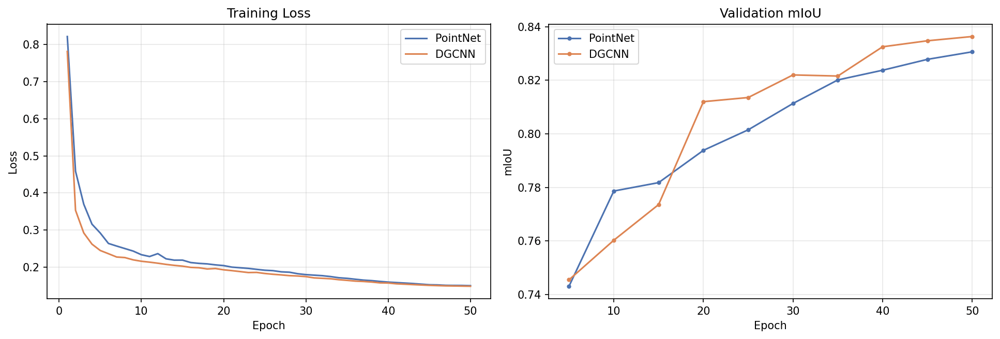
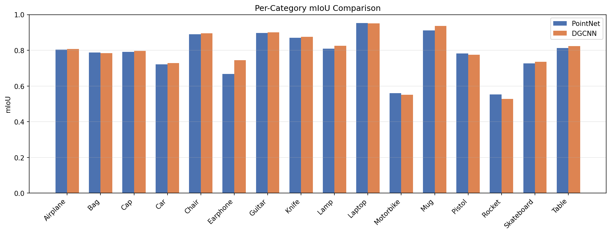
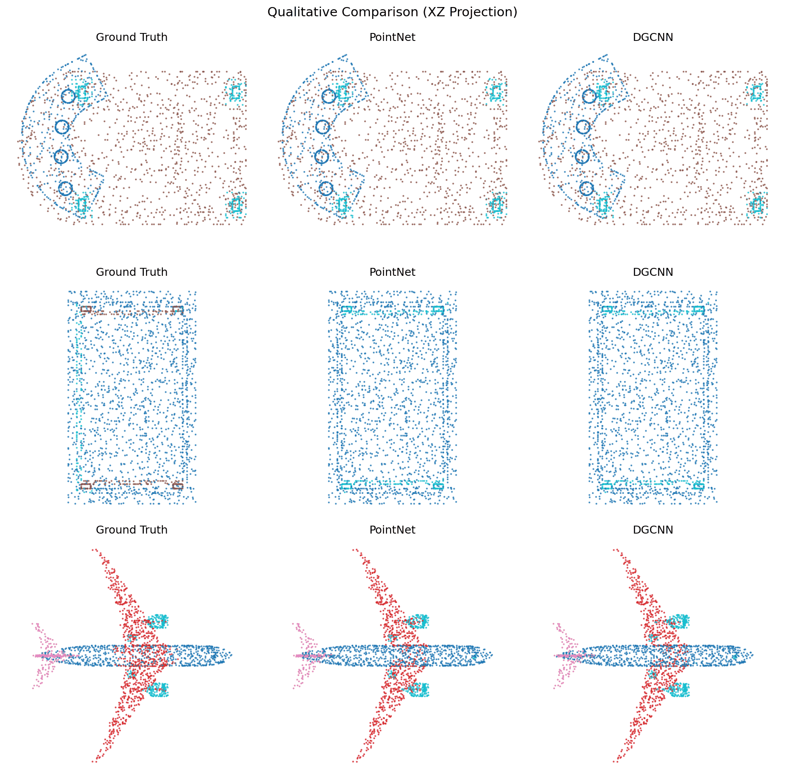

Deep Learning & Perception
3D Point-Cloud Part Segmentation
Robots that grasp and use objects need to know where an object’s parts are, such as a mug’s handle or a chair’s legs, and they often perceive objects as 3D point clouds. This project compared two widely used deep-learning models for that part-segmentation task, PointNet and DGCNN, to measure how much DGCNN’s modeling of local point neighborhoods improves on PointNet’s per-point features. I trained both models in PyTorch for 50 epochs on the ShapeNet part-segmentation benchmark, which spans 16 object categories, and evaluated them by mean intersection-over-union (mIoU) overall, per category, and on individual objects. During training, the two losses converged almost identically, but DGCNN pulled ahead in validation mIoU from roughly epoch 20 (Figure 1). Overall, DGCNN reached 83.6% mIoU against 82.9% for PointNet (Table 1), though the gain was uneven: PointNet still led in 6 of the 16 categories (Figure 2). The predictions show where DGCNN’s advantage comes from, since both models recover the main parts and differ mostly at part boundaries, where DGCNN’s EdgeConv neighborhood aggregation produces cleaner splits (Figure 3). Local geometric context therefore matters most where parts meet, while the small overall gap shows that the simpler PointNet remains competitive.



| Measure | Result |
|---|---|
| DGCNN overall mIoU | 83.6% |
| PointNet overall mIoU | 82.9% |
| Categories where PointNet led | 6 of 16 |
| Training length | 50 epochs per model |